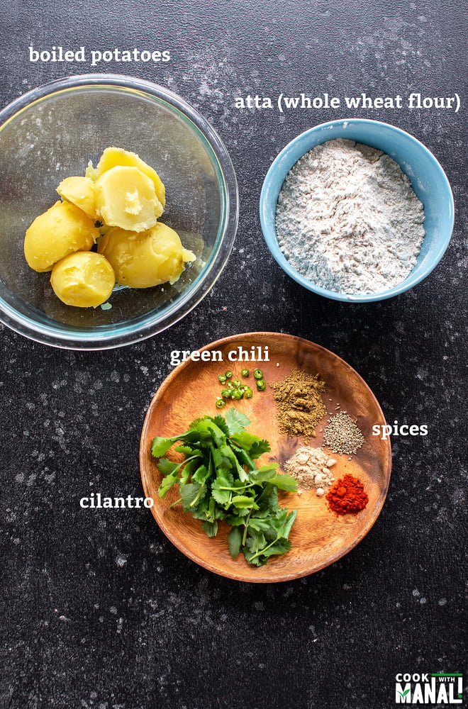
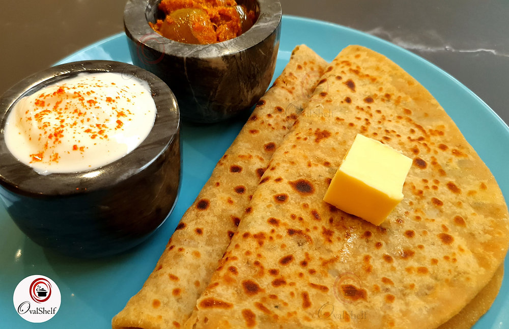

Aaloo ka Paratha
Discription
Winters are here and it's time to indulge in a delicious and crispy Aloo Paratha recipe filled with spicy potato stuffing made with spices and herbs. Paratha is one of the most loved North Indian delicacy, which is prepared in almost every Indian household. If you too are a fan of parathas, then you can try making one at home and surprising your loved ones with you smart culinary skills. If you are searching for the best recipe for how to make aloo paratha, look no further!

Ingrediants
- For Dough
- 1 Cup wheat flour
- ½ Cup Water
- For fillings :
- 2 teaspoon virgin olive oil
- teaspoon garam masala powder
- 1 onion sliced
- green chillies chopped finely
OR
- 1/2 teaspoon red chilli powder
- salt as required
- 2 tablespoon onion
- 1 tablespoon coriander leaves
Cooking :
- Step 1 Prepare the filling
- To make delicious Aloo Parathas, boil the potatoes at least a few hours before you plan to make the parathas, mash them in a large bowl and cover and refrigerate. Take them out from the fridge and add chopped onions, coriander leaves, salt, garam masala powder and red chilli powder. Mix well so that no lumps remain. Ensure that you have finely chopped the onions or the filling will fall out.
- Step 2 Knead a soft dough and roll a chapati and fill with the stuffing
- Put wheat flour in a large mixing bowl. Add water gradually and knead into a soft dough. Make small-medium balls of the dough and roll them out into 3 to 4-inch circles. Add a spoonful of potato filling in the centre. Gradually press the rolling pin on all sides while making the parathas. Be very careful to apply pressure evenly. It is very important to ensure that your potato mixture is mashed well and not lumpy or you will never be able to make perfect parathas. Seal the dough and round it with your fingers. Now, roll them with a rolling pin into round parathas. Apply the pressure very evenly and gently on all sides. Press very lightly so that the mixture does not come out.
- Step 3 Pan fry the Aloo Paratha
- Heat an iron tawa and roast the parathas, cooking them on both sides with a spoonful of olive oil. If you want to use less oil on the parathas, first roast them on both sides on low flame and when they are slightly crispy, apply olive oil with a kitchen brush on both sides. You must keep the flame low.
- Step 4 Serve hot with curd, pickle and chutney
- Serve piping hot parathas with chilled yoghurt or pickle. You can also serve the aloo parathas with green chutney or coconut chutney or a light gravy. Ideally, a light potato shorba goes best with aloo ka paratha. You can also make quick onion-tomato-green chilli raita that tastes amazing with this paratha.
